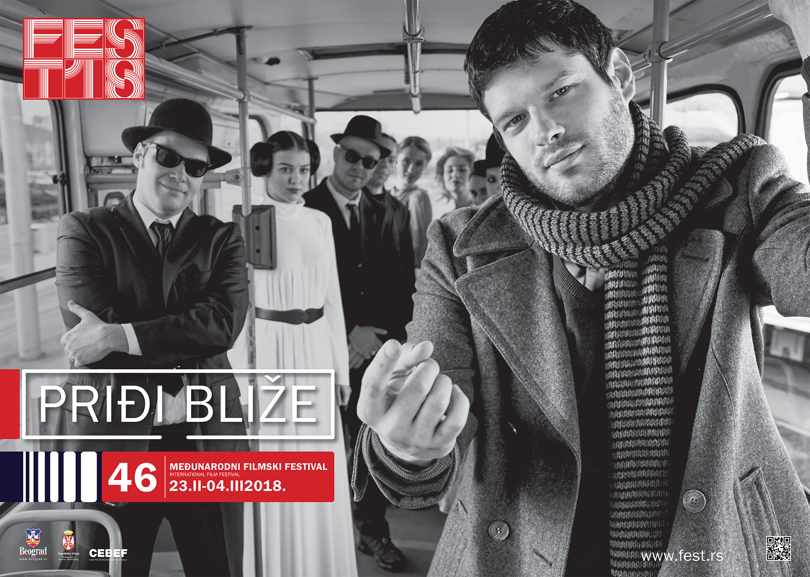

Prvi FEST, pod podnaslovom "Hrabri novi svet", otvoren je 9. januara 1971. u Domu Sindikata, projekcijom filma "Meš" Roberta Altmana. Zamišljen kao godišnji presek najboljih filmova sezone, beogradski Međunarodni filmski festival FEST izrastao je u jednu od najznačajnijih filmskih smotri i postao jedan od glavnih događaja u kulturnom životu Beograda, uz koga su odrasle mnoge mlade generacije.
Ono što ga je krasilo svih proteklih godina jeste činjenica da je bio širom otvoren za sve kinematografije sveta, i za sve relevantne autore, ali i filmove koji se neće naći na bioskopskom repertoaru. Kolika je važnost FEST-a ogleda se i u činjenici da je beogradska publika - sa filmovima nekih od najvećih reditelja današnjice kao što su Teo Angelopulos, Bob Rafelson, Volker Šlendorf, Dejvid Kronenberg, Ken Rasel, Vim Venders, Kišlovski, Hercog... imala priliku da se po prvi put sretne upravo na FEST-u.
Već prvi FEST počeo je prilično spektakularno, na njemu su se našli: "Odiseja u svemiru" Stenlija Kubrika, "Goli u sedlu" Denisa Hopera, pomenuti "Meš" Roberta Altmana, filmovi Erika Romera, Luisa Bunjuela, Živojina Pavlovića... Iako mnogi, iz nostalgije ali i s pravom, smatraju prvo izdanje FEST-a neprevaziđenim, istina je da smo i u narednim godinama na FEST-u gledali filmove koji će ostati zabeleženi u istoriji svetske kinematografije. U istoriju festivala upisani su i mnogobrojni veliki svetski glumci i reditelji koji su bili gosti festivala: Marčelo Mastrojani, Harvi Kajtel, Liv Ulman, Bernardo Bertoluči, Sofija Loren, Robert De Niro, Antonioni, Džoni Dep, Miloš Forman, Katrin Danev, Vim Venders, Abaz Kjarostami, Hana Šigula, prethodno pomenuti autori Rafelson, Šlendorf, Rasel... lista je veoma impresivna, časna i duga.
Od svog nastanka FEST je uvek imao glavni i nekoliko pratećih programa, koji su svojim kvalitetom često prevazilazili naziv "prateći". "Prateće" su bile i mnogobrojne publikacije, izložbe, simpozijumi koji su se održavali tokom festivala.
Do sada - FEST je imao oko četiri miliona gledalaca i skoro 4000 značajnih svetskih filmova - koji su na njemu imali jugoslovensku / srpsku a često i regionalnu premijeru.
Iako je prvi FEST održan pre više od 40 godina i ove godine sa istom energijom nastavlja svoj veliki kulturološki i obrazovni zadatak šireći filmske horizonte svim ljubiteljima filmske umetnosti.
2015, FEST postaje pravi takmičarski festival sa četiri takmičarske selekcije: Glavni takmičarski program - internacionalna selekcija, program Srpski film - nacionalna selekcija, program Granice - subverzivni i kontroverzni filmovi i filmovi iz regiona koji se takmiče za nagradu Nebojša Đukelić.
Još jedna od novina je uvođenje nagrade Beogradski pobednik za izuzetan doprinos filmskoj umetnosti, kao i Beogradski pobednik za dosadašnje stvaralaštvo.